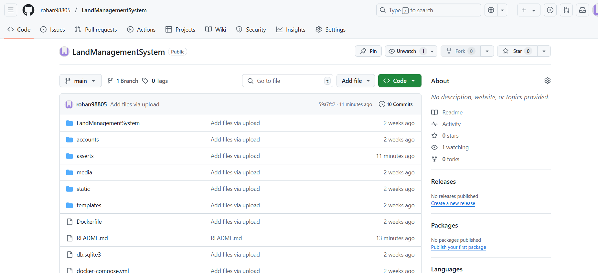
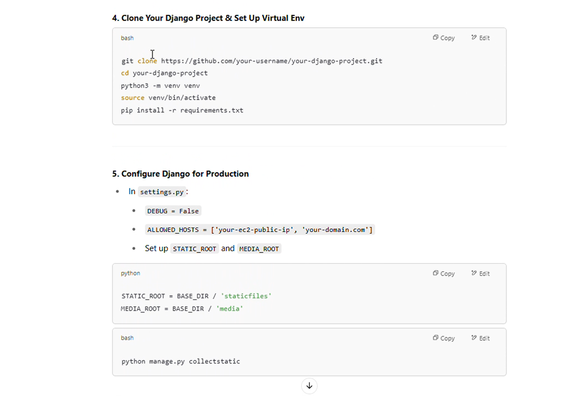
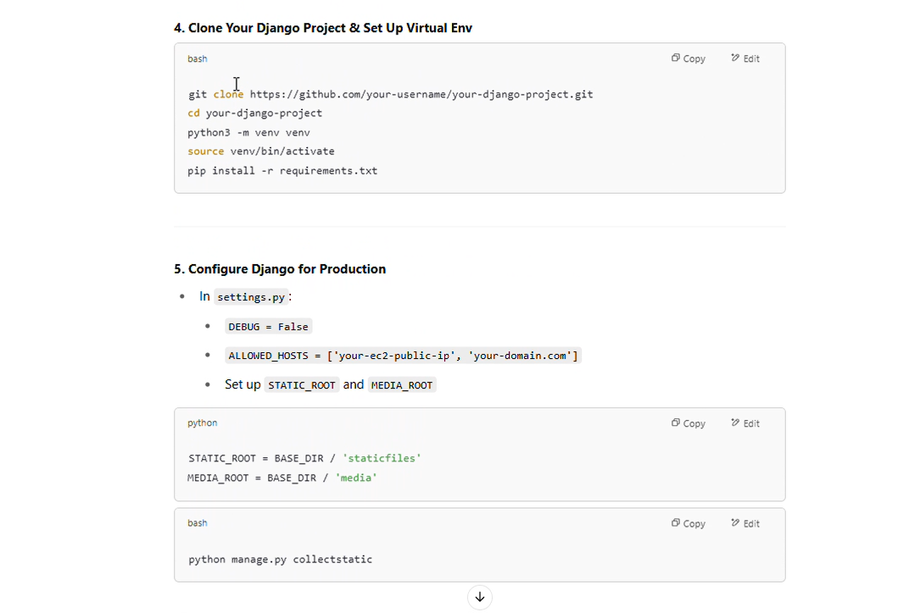

Land Management System
Dr. Sheshgiri KLE Tech Engineering College
Department of Computer Science
Project Guide: Dr. Priyanka Pagavade
Team Members
Rohan Umesh Mushannavar
SRN: 02FE23BCS402
Roll No: 35
Shreenidhi Yalwar
SRN: 02FE23BCS405
Roll No: 38
Abhishek Kamble
SRN: 02FE23BCS423
Roll No: 56
Sahil Kulkarni
SRN: 02FE23BCS407
Roll No: 40
About
This system streamlines property verification and transactions...
Problem Understanding & GitHub Setup
üåç Project Overview
The Land Management System is a comprehensive web application designed to streamline the processes involved in land transactions. It facilitates interactions between sellers, buyers, and administrators, ensuring secure and efficient management of land properties.
üß± Key Features
- User Roles: Sellers, Buyers, and Administrators with distinct permissions and functionalities.
- User Verification: Sellers upload identity proofs (Aadhaar, PAN); admins review and approve.
- Property Listings: Sellers list verified properties with full metadata and media attachments.
- Messaging System: Integrated communication between seller-admin and buyer-seller for smooth transaction negotiation.
- Price Prediction Model: Buyers get predicted prices to compare with seller listings.
- Legal and Ownership Records: Transparency ensured via history tracking and legal case linking.
üß© Problem Statement
Traditional methods of land transactions are often plagued by inefficiencies, lack of transparency, and potential fraud. Buyers face challenges in verifying property authenticity, while sellers struggle with reaching genuine buyers. Administrators, on the other hand, find it cumbersome to manage and verify numerous listings manually.

üéØ Objectives
- Automate and streamline the seller and land verification process.
- Improve transparency in land records and legal ownership.
- Enable secure and traceable communication among stakeholders.
- Assist buyers with predictive pricing to make data-driven decisions.
- Ensure platform security through proper authentication and access control.

üõ†Ô∏è Technical Stack
- Frontend: HTML, CSS, Bootstrap for responsive UI.
- Backend: Django (Python) for server-side logic and API handling.
- Database: PostgreSQL or MySQL for structured data storage.
- Machine Learning: Price prediction using scikit-learn or TensorFlow.
- Hosting: AWS EC2 for cloud deployment with CI/CD pipeline integration.
Tech Stack Finalization
Django (Backend Framework)
Django is a high-level Python web framework that encourages rapid development and clean, pragmatic design. It handles authentication, routing, models, forms, and admin interfaces efficiently.
SQLite / MySQL (Database)
SQLite is used during development for its simplicity, while MySQL is deployed in production for scalability and reliability in storing user data, land records, and messages.
GitHub (Version Control)
GitHub is used for managing source code, tracking issues, collaborating with other developers, and integrating with CI/CD pipelines.
AWS EC2 (Cloud Hosting)
The project is deployed on an AWS EC2 instance using NGINX and Gunicorn. EC2 provides scalable compute capacity in the cloud.
Docker (Containerization)
Docker is used to package the application and its dependencies into containers, ensuring consistency across environments and simplifying deployment.
Jenkins (CI/CD Automation)
Jenkins automates testing and deployment using pipelines triggered by GitHub events, ensuring code quality and continuous delivery.
CI/CD Pipeline Design
To streamline our development workflow, we implemented a CI/CD (Continuous Integration and Continuous Deployment) pipeline using GitHub Actions. This allows for automated testing, building, and deployment with every code push, ensuring code quality and faster delivery.
- Continuous Integration: Automatically runs unit tests on every pull request.
- Build Automation: Uses GitHub Actions workflows to build the Django project and check for syntax errors.
- Deployment: Pushes successful builds to the production server using SSH and Docker.
EC2 Setup & GitHub Integration
We deployed our Django-based application on an Amazon EC2 instance running Ubuntu 22.04. The setup ensures a scalable, reliable, and secure environment for hosting the web application.
- EC2 Configuration: Provisioned a t2.micro instance with Ubuntu, installed essential packages, and configured SSH access using a PEM key.
- NGINX: Used as a reverse proxy server to handle HTTP requests and serve static files.
- Gunicorn: Acts as the WSGI HTTP server running the Django application behind NGINX.
- Firewall & Security: Configured UFW and AWS Security Groups to allow only required ports (SSH, HTTP, HTTPS).
- GitHub Webhooks: Set up webhooks to trigger automatic deployment on `git push` to the main branch. A webhook listener script pulls the latest code and restarts Gunicorn.
This setup automates the deployment process and ensures minimal downtime when updates are pushed.
Docker
Docker is a platform that enables developers to package applications and their dependencies into containers, ensuring consistency across multiple environments. In our project, Docker simplifies deployment and scaling by encapsulating the application in isolated environments.
üîß Dockerfile
The Dockerfile defines the steps to build a Docker image for our application. It specifies the base image, copies application files, installs dependencies, and sets up the command to run the application.
üì¶ Building the Docker Image
We build the Docker image using the following command:
docker build -t land-management-system .üöÄ Running the Docker Container
Once the image is built, we run the container using:
docker run -d -p 8000:8000 land-management-system
üóÇÔ∏è Docker Compose
Docker Compose allows us to define and manage multi-container Docker applications. We use it to run the application alongside services like the database.
Jenkins
Jenkins is an open-source automation server that facilitates continuous integration and continuous delivery (CI/CD). It automates the building, testing, and deployment processes, enhancing the efficiency and reliability of our development workflow.
⚙️ Jenkins Pipeline
We utilize Jenkins Pipelines to define our build and deployment processes as code. This approach allows for version control and easy maintenance of the CI/CD workflow.
üîÑ Integration with GitHub
Jenkins integrates with GitHub to trigger builds automatically upon code commits. Webhooks notify Jenkins of changes, initiating the pipeline process.
üê≥ Building Docker Images with Jenkins
Jenkins automates the building of Docker images using the defined Dockerfile. It ensures that the latest code changes are encapsulated in the Docker image.
üö¢ Deploying to AWS EC2
After building the Docker image, Jenkins deploys the container to an AWS EC2 instance. This automated deployment ensures that the application is always up-to-date with the latest changes.
Access Jenkins Web UI at: http://16.171.144.7:8080
Working Steps
 
